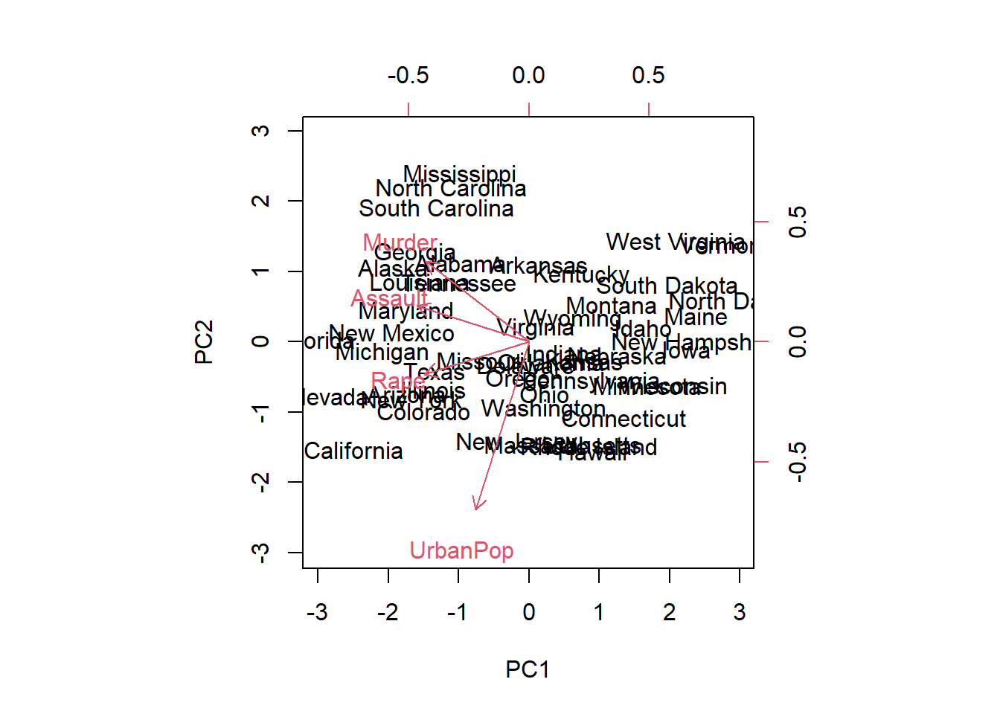
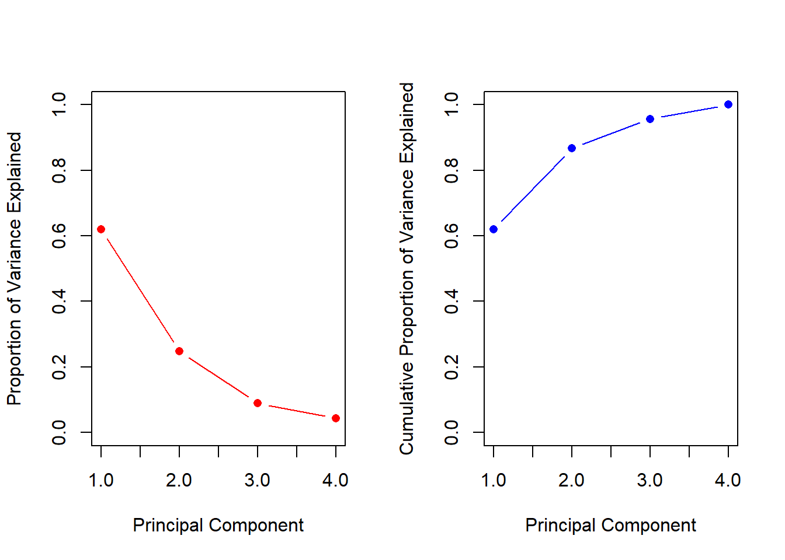
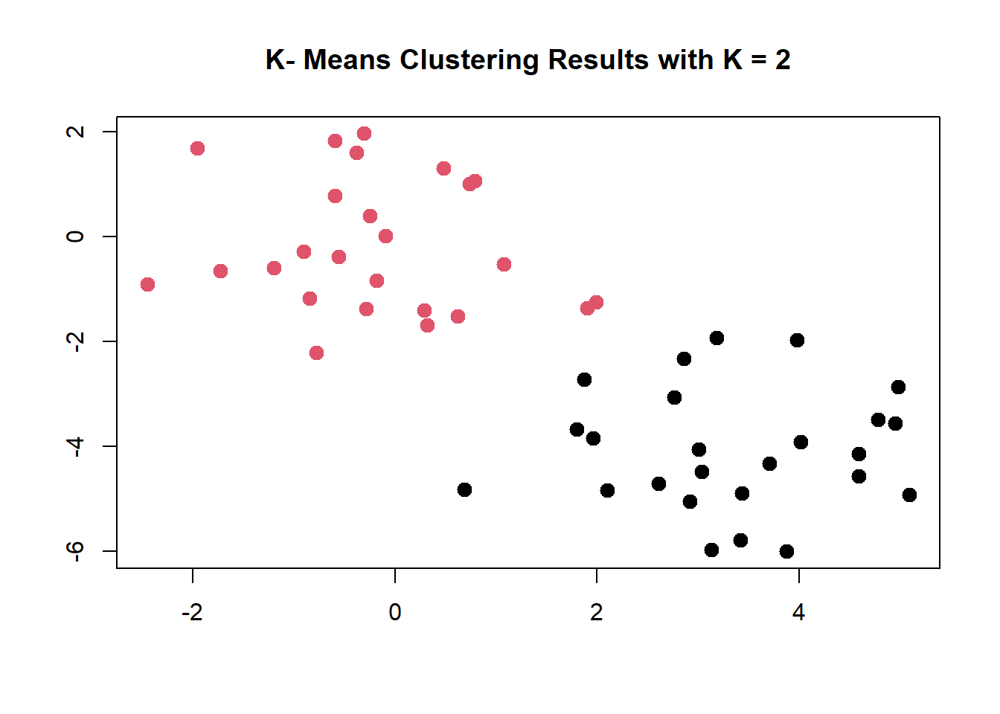
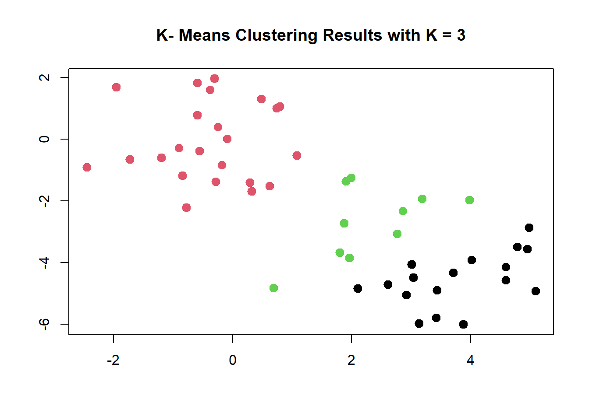
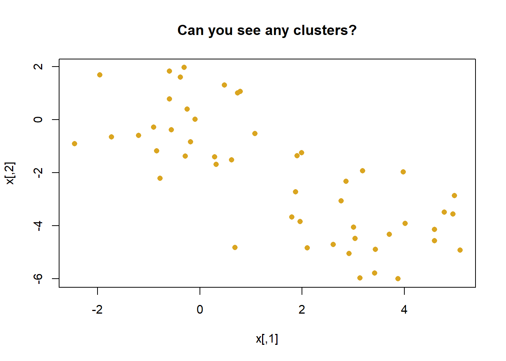

I just watched an old film called The Man Who Shot Liberty Valance that tells the story of a shockingly lawless time in the American West at some time in the 1800s, which is so long ago that it somehow makes the violence easier to accept. However, the USArrests data are from 1973…
In this lab, we perform PCA on the USArrests data set, which is part of the base R package. The rows of the data set contain the 50 US states, in alphabetical order.
Note that the apply() function allows us use a function, in this case the mean() function, on each row or column of a data set. The second input here denotes whether we wish to compute the mean of the rows, 1, or the columns, 2. We see that there are on average three times as many rapes as murders, and more than eight times as many assaults as rapes.
We can also examine the standard deviation of each variable using the apply() function.
Not surprisingly, the variables also have vastly different variances: the UrbanPop variable measures the percentage of the population in each state living in an urban area, which is not a comparable number to the number of rapes in each state per 100,000 individuals. If we failed to scale the variables before performing PCA, then most of the principal components that we observed would be driven by the Assault variable, since it has by far the largest mean and variance. Thus, it is important to standardize the variables to have mean zero and standard deviation one before performing PCA.
prcomp()
We now perform principal components analysis using the prcomp() function, which is one of several functions in R that perform PCA.
pr.out <-prcomp(USArrests, scale =TRUE)
By default, the prcomp() function centers the variables to have mean zero. By using the option scale = TRUE, we scale the variables to have standard deviation one. The output from prcomp() contains a number of useful quantities.
names(pr.out)
[1] "sdev" "rotation" "center" "scale" "x"
The center and scale components correspond to the means and standard deviations of the variables that were used for scaling prior to implementing PCA.
The rotation matrix provides the principal component loadings; each column of pr.out$rotation contains the corresponding principal component loading vector. This function names it the rotation matrix, because when we matrix-multiply the \(X\) matrix by pr.out$rotation, it gives us the coordinates of the data in the rotated coordinate system. These coordinates are the principal component scores.
We see that there are four distinct principal components. This is to be expected because there are in general min(n 1, p) informative principal components in a data set with n observations and p variables.
Using the prcomp() function, we do not need to explicitly multiply the data by the principal component loading vectors in order to obtain the principal component score vectors. Rather the \(50 \times 4\) matrix x has as its columns the principal component score vectors. That is, the kth column is the kth principal component score vector.
dim(pr.out$x)
[1] 50 4
biplot()
We can plot the first two principal components as follows:
# State name labels:# the coordinates of the pc1 and pc2 scores# The vectors:# the coordinates of the pc1 and pc2 rotationbiplot(pr.out, scale =0)

The scale = 0 argument to biplot() ensures that the arrows are scaled to represent the loadings; other values for scale give slightly different biplots with different interpretations.
PC variance
The variance explained by each principal component is obtained by squaring the standard deviations:
pr.var <- pr.out$sdev^2pr.var
[1] 2.4802416 0.9897652 0.3565632 0.1734301
It is often useful to understand the proportion of variance explained by each principal component, we simply divide the variance explained by each principal component by the total variance explained by all four principal components:
pve <- pr.var /sum(pr.var)pve
[1] 0.62006039 0.24744129 0.08914080 0.04335752
We see that the first principal component explains 62.0% of the variance in the data, the next principal component explains 24.7% of the variance, and so forth. We can plot the PVE explained by each component, as well as the cumulative PVE, as follows:
par(mfrow =c(1, 2))plot (pve, xlab ="Principal Component",ylab ="Proportion of Variance Explained", ylim =c(0, 1) , type ="b",pch =16, col ='red')plot(cumsum(pve), xlab ="Principal Component",ylab ="Cumulative Proportion of Variance Explained", ylim =c(0, 1) , type ="b",pch =16, col ='blue')

cumsum()
a <-c(1, 2, 8, -3)cumsum(a)
[1] 1 3 11 8
2 Matrix completion
We now analyse the USArrests data. We turn the data frame into a matrix, after centering and scaling each column to have a mean of zero and a variance of one.
X <-data.matrix(scale(USArrests))pcob <-prcomp(X) summary(pcob)
Importance of components:
PC1 PC2 PC3 PC4
Standard deviation 1.5749 0.9949 0.59713 0.41645
Proportion of Variance 0.6201 0.2474 0.08914 0.04336
Cumulative Proportion 0.6201 0.8675 0.95664 1.00000
svd()
A short digression is how PCA works mathematically. Solving a centered and scaled matrix of data to discover the axis of variation specific to each principal component is called singular value composition, SVD for short. Of course, we can do this in R too.
sX <-svd(X)# v is equivalent to the loadings matrix in pca()names(sX)
[1] "d" "u" "v"
# NB the value magnitudes are equal to pca loadingsround(sX$v, 3)
The matrix u is equivalent to the matrix of standardized scores, and the standard deviations are in the vector d. We can recover the score vectors using the output of svd(). They are identical to the score vectors output by prcomp().
# <3 matrix tricks# just first 5 rowsround(t(sX$d *t(sX$u))[1:5, ], 3)
Note it is possible to just carry out this using the prcomp() function, here we use the svd() function in order to illustrate its use.
3 K-mean clustering
The function kmeans() performs K-means clustering in R. We begin with a simple simulated example in which there truly are two clusters in the data: the first 25 observations have a mean shift relative to the next 25 observations.
set.seed(2)x <-matrix(rnorm(50*2), ncol =2) # fake# manufacture one clusterx[1:25, 1] <- x[1:25, 1] +3# different clusterx[1:25, 2] <- x[1:25, 2] -4# vizpar(mfrow=c(1,1))plot(x, pch =16, col ='goldenrod',main ='Can you see any clusters?')
We now perform K-means clustering with K = 2.
# YOU pick how many clusters with the centers arg.km.out <-kmeans(x, centers =2, nstart =20)# predicted clusterskm.out$cluster
K-means clustering perfectly separates the observations into two clusters even though we did not supply any group information to kmeans(). We can plot the data, with each observation colored according to its cluster assignment.
plot (x, col = (km.out$cluster),main ="K- Means Clustering Results with K = 2", xlab ="", ylab ="", pch =20 , cex =2)

Here the observations can be easily plotted because they are two-dimensional. If there were more than two variables then we could instead perform PCA and plot the first two principal components score vectors.
In this example, we knew that there really were two clusters because we generated the data. However, for real data, in general we do not know the true number of clusters. We could instead have performed K-means clustering on this example with K = 3.
plot (x, col = (km.out$cluster),main ="K- Means Clustering Results with K = 3", xlab ="", ylab ="", pch =20 , cex =2)

When K = 3, K-means clustering splits up the “manufactured” clusters.
Improving kmeans()
To run the kmeans() function in R with multiple initial cluster assignments, we use the nstart argument. If a value of nstart greater than one is used, then K-means clustering will be performed using multiple random assignments, and the kmeans() function will report only the best results. Here we compare using nstart = 1 to nstart = 20.
Note that km.out$tot.withinss is the total within-cluster sum of squares, which we seek to minimize by performing K-means clustering. The individual within-cluster sum-of-squares are contained in the vector km.out$withinss.
It is strongly recommend to always run K-means clustering with a large value of nstart, such as 20 or 50, since otherwise an undesirable local optimum may be obtained.
When performing K-means clustering, in addition to using multiple initial cluster assignments, it is also important to set a random seed using the set.seed() function. This way, the initial cluster assignments in Step 1 can be replicated, and the K-means output will be fully reproducible.
4 Hierarchical Clustering
Hierarchical clustering attempts to identify “splits” in variable values that partition data into classifications based on associated values.
hclust()
The hclust() function implements hierarchical clustering in R. In the following example we use the data from the previous lab to plot the hierarchical clustering “dendrogram” using complete, single, and average linkage clustering, with Euclidean distance (straight-line distance between points) as the dissimilarity measure. We begin by clustering observations using complete linkage.
dist()
The dist() function is used to compute the 50 × 50 inter-observation Euclidean distance matrix.
hc.complete <-hclust(dist(x), method ="complete")
There are several methods used; We could just as easily perform hierarchical clustering with average or single linkage instead:
The second argument to cutree() is the number of clusters we wish to obtain. For this data, complete and average linkage generally separate the observations into their correct groups. However, single linkage identifies one point as belonging to its own cluster. A more sensible answer is obtained when four clusters are selected, although there are still two singletons.
We know analyzing variables of different scale and variance can affect your analysis. To scale the variables before performing hierarchical clustering of the observations, we use the scale() function:
par(mfrow=c(1,1))xsc <-scale(x)plot( hclust(dist(xsc), method ="complete"), main ="Hierarchical Clustering with Scaled Features")
as.dist()
Correlation-based distance can be computed using the as.dist() function, which converts an arbitrary square symmetric matrix into a form that the hclust() function recognizes as a distance matrix. However, this only makes sense for data with at least three features since the absolute correlation between any two observations with measurements on two features is always 1. Hence, we will cluster a three-dimensional data set. This data set does not contain any true clusters.
x <-matrix(rnorm(30*3), ncol =3)# explore the nesting if you wishdd <-as.dist(1-cor(t(x))) plot(hclust(dd, method ="complete"), main ="Complete Linkage with Correlation - Based Distance", xlab ="", sub ="")
5 Data story: genomics data
NC160 data
Unsupervised techniques are often used in the analysis of genomic data. In particular, PCA and hierarchical clustering are popular tools. We illustrate these techniques on the NCI60 cancer cell line microarray data, which consists of 6,830 gene expression measurements on 64 cancer cell lines.
The question here is whether there are any genes that cluster by cell line.
Each cell line is labeled with a cancer type, given in nci.labs. We do not make use of the cancer types in performing PCA and clustering, as these are unsupervised techniques. But after performing PCA and clustering, we will check to see the extent to which these cancer types agree with the results of these unsupervised techniques.
The data has 64 rows and 6,830 columns.
dim(nci.data)
[1] 64 6830
We begin by examining the cancer types for the cell lines.
We first perform PCA on the data after scaling the variables (genes) to have standard deviation one, although one might reasonably argue that it is better not to scale the genes (i.e. this is somewhat subjective).
pr.out <-prcomp(nci.data, scale =TRUE)
We now plot the first few principal component score vectors, in order to visualize the data. The observations (cell lines) corresponding to a given cancer type will be plotted in the same color, so that we can see to what extent the observations within a cancer type are similar to each other. We first create a simple function that assigns a distinct color to each element of a numeric vector. The function will be used to assign a color to each of the 64 cell lines, based on the cancer type to which it corresponds.
rainbow() function
# make function to set different colour palette for categoriesCols <-function(vec){ cols <-rainbow(length(unique(vec)))return(cols[as.numeric(as.factor(vec))]) }
Note that the rainbow() function takes as its argument a positive integer, and returns a vector containing that number of distinct colors. We now can plot the principal component score vectors.
par(mfrow =c(1, 2))# visualization of clusters for PC1 and PC2plot(pr.out$x[ , 1:2], col =Cols(nci.labs), pch =19, xlab ="Z1", ylab ="Z2")# visualization of clusters for PC1 and PC3plot (pr.out$x[ , c(1, 3)], col =Cols (nci.labs), pch =19, xlab ="Z1", ylab ="Z3")
On the whole, cell lines corresponding to a single cancer type do tend to have similar values on the first few principal component score vectors. This indicates that cell lines from the same cancer type tend to have pretty similar gene expression levels.
We can obtain a summary of the proportion of variance explained (PVE) of the first few principal components using the summary() method for a prcomp object:
# just slice out first 5 PCs to peeksummary(pr.out)$importance[, 1:5]
Using the plot() function, we can also plot the variance explained by the first few principal components.
par(mfrow=c(1,1))plot(pr.out, xlab ='PC1 through PC10')

Fancier var plots
Note that the height of each bar in the bar plot is given by squaring the corresponding element of pr.out$sdev. However, it is more informative to plot the PVE of each principal component (i.e. a scree plot) and the cumulative PVE of each principal component. This can be done with just a little work.
pve <-100* pr.out$sdev^2/sum(pr.out$sdev^2)par(mfrow =c(1, 2))plot(pve, type ="o", ylab ="PVE", xlab ="Principal Component", pch =16, col ="red")plot(cumsum(pve), type ="o", ylab ="Cumulative PVE", xlab ="Principal Component", pch =16, col ="blue")
We see that together, the first seven principal components explain around 40% of the variance in the data. This is not a huge amount of the variance. However, looking at the scree plot, we see that while each of the first seven principal components explain a substantial amount of variance, there is a marked decrease in the variance explained by further principal components. That is, there is an elbow in the plot after approximately the seventh principal component. This suggests that there may be little benefit to examining more than seven or so principal components (though even examining seven principal components may be difficult in itself).
clustering NC160
We now proceed to hierarchically cluster the cell lines in the NCI60 data, with the goal of finding out whether or not the observations cluster into distinct types of cancer. To begin, we standardize the variables to have mean zero and standard deviation one. As mentioned earlier, this step is optional and should be performed only if we want each gene to be on the same scale.
sd.data <-scale(nci.data )
We now perform hierarchical clustering of the observations using complete, single, and average linkage. Euclidean distance is used as the dissimilarity measure.
par(mfrow =c(1,3))data.dist <-dist(sd.data)plot(hclust(data.dist), xlab ="", sub ="", ylab ="", labels = nci.labs, main ="Complete Linkage")plot(hclust(data.dist, method ="average"),labels = nci.labs, main ="Average Linkage", xlab ="", sub ="", ylab ="")plot(hclust(data.dist, method ="single"), labels = nci.labs , main ="Single Linkage", xlab ="", sub ="", ylab ="")
These figures are not aesthetically pleasing, but we can still see that the three methods resulted in very different clustering.
Typically, single linkage will tend to yield “trailing” clusters: very large clusters onto which individual observations attach one-by-one. On the other hand, complete and average linkage tend to yield more balanced, attractive clusters. For this reason, complete and average linkage are generally preferred to single linkage. Clearly cell lines within a single cancer type do tend to cluster together, although the clustering is not perfect. We will use complete linkage hierarchical clustering for the analysis that follows.
Cutting clusters
We can cut the dendrogram at the height that will yield a particular number of clusters, say four:
There are some clear patterns. All the leukemia cell lines fall in cluster 3, while the breast cancer cell lines are spread out over three different clusters. We can plot the cut on the dendrogram that produces these four clusters:
The abline() function draws a straight line on top of any existing plot in R. The argument h = 139 plots a horizontal line at height 139 on the dendrogram; this is the height that results in four distinct clusters. It is easy to verify that the resulting clusters are the same as the ones we obtained using cutree(hc.out, 4).
Printing the output of hclust gives a useful brief summary of the object:
hc.out
Call:
hclust(d = dist(sd.data))
Cluster method : complete
Distance : euclidean
Number of objects: 64
K-means clustering and hierarchical clustering with the dendrogram cut to obtain the same number of clusters can yield very different results. How do these NCI60 hierarchical clustering results compare to what we get if we perform K-means clustering with K = 4?
We see that the four clusters obtained using hierarchical clustering and K-means clustering are somewhat different. Cluster 4 in K-means clustering is identical to cluster 3 in hierarchical clustering. However, the other clusters differ: for instance, cluster 2 in K-means clustering contains a portion of the observations assigned to cluster 1 by hierarchical clustering, as well as all of the observations assigned to cluster 2 by hierarchical clustering.
Rather than performing hierarchical clustering on the entire data matrix, we can simply perform hierarchical clustering on the first few principal component score vectors, as follows:
hc.out <-hclust(dist(pr.out$x[, 1:5]) )plot (hc.out, labels = nci.labs,main ="Hier. Clust. on First Five Score Vectors")
Not surprisingly, these results are different from the ones that we obtained when we performed hierarchical clustering on the full data set. Sometimes performing clustering on the first few principal component score vectors can give better results than performing clustering on the full data. In this situation, we might view the principal component step as one of “denoising” the data. We could also perform K-means clustering on the first few principal component score vectors rather than the full data set.
6 Exercises
Exercise 1
We mentioned the use of correlation-based distance and Euclidean distance as dissimilarity measures for hierarchical clustering. It turns out that these two measures are almost equivalent: if each observation has been centered to have mean zero and standard deviation one, and if we let \(r_{ij}\) denote the correlation between the ith and jth observations, then the quantity \(1-r_{ij}\) is proportional to the squared Euclidean distance between the \(i^{th}\) and \(j^{th}\) observations.
On the USArrests data, can you explore the data to show that this proportionality holds?
Hint: The Euclidean distance can be calculated using the dist() function, and correlations can be calculated using the cor() function.
Exercise 2
We also saw that the PVE can be obtained using the sdev output of the prcomp() function.
On the USArrests data, calculate PVE by using the sdev output of the prcomp() function
Exercise 3
Consider the USArrests data. We will now perform hierarchical clustering on the states.
3.1
Using hierarchical clustering with complete linkage and Euclidean distance, cluster the states.
3.2
Cut the dendrogram at a height that results in three distinct clusters. Which states belong to which clusters?
3.3
Hierarchically cluster the states using complete linkage and Euclidean distance, after scaling the variables to have standard deviation one.
3.4
What effect does scaling the variables have on the hierarchical clustering obtained? In your opinion, should the variables be scaled before the inter-observation dissimilarities are computed? Provide a justification for your answer.